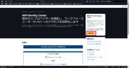
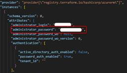
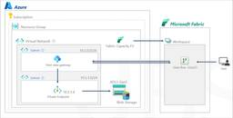
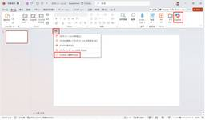
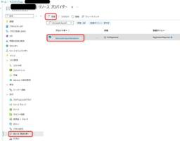
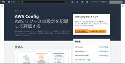

JBS Tech Blog
https://blog.jbs.co.jp/
JBS Tech Blogは、日本ビジネスシステムズ（JBS）の社員が分担して執筆を担当し、技術情報を発信しているブログです！
フィード
Power Apps：Notify関数を用いて通知を表示させる 1
1
JBS Tech Blog
Power Appsアプリでの通知表示をNotify関数で実装！エラーや警告も設定可能な4種類の通知タイプを紹介します。
38分前

IAM Identity Centerディレクトリを利用したユーザー管理 1
JBS Tech Blog
IAM Identity Centerとは、AWSが提供するマルチアカウント環境でのユーザーやアクセス権限を一元管理するためのサービスです。 今回は、IAM Identity Centerを有効化した際にデフォルトで利用できる、AWS単体のIAM Identity Centerディレクトリを利用したユーザー管理方法を紹介します。 本記事では、以下サービス名は次のように記載いたします。 AWS Identity and Access Management：IAM AWS IAM Identity Center：IAM Identity Center IAM Identity Centerの基本概…
3日前

Terraformにてwrite-only attributeを利用する 1
JBS Tech Blog
Terraformのv1.11.0にてwrite-only attributesの機能が追加されました。 github.com 今回はwrite-only attributesを利用してみようと思います。 write-only attributesとは 前提条件 実行してみる write-only attributesを利用しない場合 Terraform定義ファイルを作成する リソースを作成する ステートファイルを確認する write-only attributesを利用した場合 Terraform定義ファイルを作成する リソースを作成する ステートファイルを確認する おわりに write-o…
3日前

【Microsoft×生成AI連載】Microsoft 365 Copilotの画像生成機能を使ってみた 1
JBS Tech Blog
【Microsoft×生成AI連載】シリーズの記事です。 本記事ではMicrosoft 365 Copilotで利用できる画像生成機能について紹介します。 これまでの連載 画像生成機能の紹介 ブランドキットの作成 ロゴの追加 色の追加 フォントの追加 画像の追加 ブランド音声の追加 画像の生成 ポスターの生成 バナーの生成 利用シーンとメリット、注意点 利用シーン メリット 注意点 まとめ おまけ(Copilot Chatによる本記事の要約) これまでの連載 これまでの連載記事一覧はこちらの記事にまとめておりますので、過去の連載を確認されたい方はこちらの記載をご参照ください。 blog.jbs…
3日前

【Microsoft Fabric】仮想ネットワークデータゲートウェイを使ったデータソースへのプライベート接続 1
JBS Tech Blog
Microsoft Fabric（以降、Fabricと記載）は、データの収集や処理、変換、リアルタイム分析、レポート作成などの機能を統合した企業向けのSaaS型プラットフォームです。 今回は、Fabricの仮想ネットワークデータゲートウェイを利用し、プライベートエンドポイントを有効にしたストレージアカウントに接続する方法について紹介します。 仮想ネットワークデータゲートウェイとは 構成図 実装 Azure Portalでの操作 リソースプロバイダーの登録 サブネット（仮想ネットワークデータゲートウェイ用）の作成 サブネット（プライベートエンドポイント用）の作成 プライベートエンドポイントの作成…
4日前

【Microsoft×生成AI連載】【やってみた】Microsoft Copilot Studioエージェントビルダーで事前に作成したエージェントをPowerPointで利用してみた 1
JBS Tech Blog
【Microsoft×生成AI連載】久保田です。今回はMicrosoft Copilot Studioエージェントビルダーで事前に作成したエージェントをPowerPointで利用してみました。 ※この記事の情報は2025/6/16時点のものです。 Copilot Studioエージェントビルダーに興味がある方や、Office製品と組み合わせて利用したい方など、様々な方に読んでいただきたい記事となっておりますので、ぜひご覧ください。 これまでの連載 Copilot Studioエージェントビルダーの概要 PowerPointでのCopilot Studioエージェントビルダー利用について エージ…
5日前

Terraform Export from the Azure Portalを試してみた
JBS Tech Blog
AzureリソースをAzure Portal上からTerraform定義ファイルでエクスポート可能な機能が発表されました。 techcommunity.microsoft.com 今回は本機能を試してみようと思います。 Terraform Export from the Azure Portalとは 試してみる 事前準備 リソースプロバイダーを登録する 事前準備 今回エクスポートするリソース エクスポートする エクスポートした定義ファイルにて新規リソースを作成する 定義ファイルを修正する Terraformを実行する 作成されたリソースを確認する おわりに Terraform Export f…
6日前

【AWS】AWS Configでリソースタグのチェックをする-AWS Config有効化編-
JBS Tech Blog
AWS Configのマネージドルールでリソースのタグをチェックする方法をご紹介します。今回はAWS Configセットアップ編になります。
7日前

【Microsoft×生成AI連載】【最新情報】Copilot Studioエージェントビルダーのナレッジにチャットとサイトが対応しより便利に
JBS Tech Blog
Microsoft Copilot StudioエージェントビルダーがTeamsチャットやメール、SharePointサイトをナレッジとして追加可能に！最新機能でAIエージェントをもっと便利に。記事では具体的な作成手順も紹介。
10日前
Azure Red Hat Enterprise Linux 仮想マシン導入ポイント～その2～
JBS Tech Blog
Azure上にデプロイしたRHEL VMの、SELinux無効化、Firewalld無効化、IPv6無効化、日本語化、パッケージアップデートについて説明します。
11日前
Microsoft Entra Connect Health 管理者への通知について
JBS Tech Blog
Microsoft Entra Connect Health（MECH）は、オンプレミスのActive Directory ドメインサービス（AD DS） から Microsoft Entra ID（Entra ID） への同期を監視および管理するための重要なツールですが、プロキシサーバを使用するネットワーク環境では、適切な設定が必要です。 本記事では、Microsoft Entra Connect Health（MEC）でのエラーを管理者アカウントに対して通知する設定手順について解説します。 Microsoft Entra Connect Health について 設定方法 実際の通知 まとめ…
11日前
【AWS】AWS BudgetsレポートでAWSの利用状況を把握する
JBS Tech Blog
AWS BudgetsとはAWSのコスト管理ツールのことで、AWSの利用状況とコストを追跡して予算アラートの設定やレポートの作成を行うことができます。今回はAWS BudgetsレポートでAWSの利用料金を把握する方法についてご紹介します。
12日前
【Microsoft×生成AI連載】【Word】WordのCopilot活用術：ドキュメントの要点整理術
JBS Tech Blog
本記事では「Microsoft Word」(以下、Word)で利用できるCopilotの機能について紹介します。
12日前
【OpManager使ってみた】第1回 OpManagerのインストール
JBS Tech Blog
本記事では、監視ソフトウェア「OpManager」の紹介をしていきます。 第1回は、OpManagerのインストール方法について、説明していきます。 概要 OpManagerのインストール手順 インストーラーのダウンロード サーバーへのインストール インストール後の確認 まとめ 概要 OpManagerとは、ゾーホージャパン株式会社が提供している監視ソフトウェアです。 幅広い機器への対応、多彩な監視項目に加え、設定や操作のしやすさといったユーザビリティに優れた製品です。 これから全5回に渡り、Windows Server 2022へのOpManager(評価版)導入、設定、一部監視機能について…
13日前
【PowerShell】Active Directoryモジュールがない環境でActive Directoryのユーザー情報を取得する
JBS Tech Blog
顧客環境でモジュールのインストールが難しいため、モジュールを使用せずにADのユーザー情報を取得する方法を調査してみました。
13日前
【Windows 365】クラウドPCへのRDP接続許可設定について -IntuneからのPower Shellスクリプト配布による対応編-
JBS Tech Blog
Windows 365は、Azure上に配置されているWindows Desktopにインターネット経由で接続できるMicrosoftのVDIソリューションの1つです。エンドユーザーにライセンスを割り当てることでクラウドPCと呼ばれる仮想マシンがデプロイされ、各ユーザー専用のWindows デバイスとして利用することができます。新しくデプロイされたすべてのクラウドPCにおいて、ポート3389の通信は既定でブロックする仕様となっているそうです。*1 learn.microsoft.comそのため、クラウドPCに対するRDP接続は、接続元問わず必ずブロックされてしまいます。本記事では、Intune…
14日前
Veeamを使ってAmazon S3へバックアップしてみる第2弾 Veeam設定編
JBS Tech Blog
本記事では、Veeam Backup&Replicationを使用して、バックアップデータをAmazon S3へバックアップするためのVeeam側での設定手順について紹介いたします。 前提条件 Backup Repositoryへの登録手順(Amazon S3) オブジェクトストレージリポジトリウィザードを起動 オブジェクトストレージリポジトリ名を指定 オブジェクトストレージアカウントを指定 オブジェクトストレージ設定を指定 マウントサーバの設定 コンポーネント確認及びオブジェクトストレージ設定を適用 まとめ 前提条件 本手順を実施するにあたり、以下の項目を前提とします。 Amazon S3バ…
14日前
Azure AI Foundry Agent Serviceでマルチエージェントを構築する
JBS Tech Blog
Azure AI Foundry Agent Serviceで、シングルエージェントだけでなくマルチエージェントがサポートされていたので、実装方法をご紹介します。 実行環境 事前準備 エージェントの作成 マルチエージェントの作成 コード 実行結果 おわりに 実行環境 Python 3.11.9 azure-ai-projects 1.0.0b11 事前準備 以下のリンクを参考に、Azure AI Foundry Agent Serviceの環境をセットアップし、エージェントを作成する準備を行います。手順を実行するためには、Azure AI アカウント所有者などのアクセス許可が必要になるので、リ…
17日前
【Microsoft×生成AI連載】【Power Platform】Power AppsでCopilotコントロールを使ってみた
JBS Tech Blog
本記事では、Power Appsの「Copilot」と「Copilotの回答」コントロールについて紹介しました。
17日前
【Azure】プライベート接続でLog Analyticsを活用する（構築編）
JBS Tech Blog
前回は、Log Analyticsをプライベートエンドポイント経由で利用する方法について説明しました。 blog.jbs.co.jp 今回は、実際にAzure Monitor Private Link Scope（以下、AMPLS）を設定する手順をご紹介いたします。 作成するリソース 事前準備 AMPLSの作成 AMPLSとは？ 手順 プライベートエンドポイントの作成 手順 データ収集エンドポイントの作成 データ収集エンドポイントの役割 手順 データ収集ルール（DCR）の作成 データ収集ルール（DCR）とは？ 手順 まとめ 作成するリソース 本記事では、プライベート接続でLog Analyti…
18日前
Azure AI SearchのカスタムスキルでマルチモーダルRAGを実現してみた
JBS Tech Blog
本記事ではAzure AI Searchを使ってマルチモーダルRAG基盤を作成します。実際のPDFを題材に、テキストだけでなく画像（図表）からの情報も活用して質問に答える仕組みを解説します。
19日前
Copilot プロンプト ギャラリーの利用方法
JBS Tech Blog
今回はMicrosoftが公開しているCopilot プロンプト ギャラリーをご紹介します。 Copilot プロンプト ギャラリーでは、職業や業務に合ったプロンプトを探すことが出来ます。 これからCopilotを使いたい方や、Copilotで今以上に業務を効率化させたい方は、是非、本記事から利用方法を知っていただければと思います。 Copilotプロンプトギャラリーとは Copilot プロンプト ギャラリーの利用手順 プロンプトの保存について Copilot プロンプト ギャラリーのおすすめの使い方 アプリ タスク 職種 まとめ Copilotプロンプトギャラリーとは Copilot プロ…
19日前
【Microsoft×生成AI連載】【やってみた】Copilot Studioでエージェントフローを作成してみた
JBS Tech Blog
MicrosoftのCopilot Studioでのエージェントフローの作成方法を解説。自動化ワークフローを利用して業務効率化を推進するヒントを紹介。
19日前
OutlookでCopilotを利用して会議に関連した業務を効率化する方法
JBS Tech Blog
OutlookのCopilot機能は、これまではメールの要約や下書き作成などのメールに特化したものが多くある印象でしたが、会議や予定などのカレンダーに特化したCopilot機能も追加されていました。 今回は、OutlookでCopilotを利用して、会議に関連した業務を効率化する方法についてご紹介いたします。 CopilotのOutlookカレンダー関連の機能の紹介 自分と相手の空き時間を特定 直近で自分と相手が参加する共通の会議を特定 Copilotのカレンダー機能を使う方法 自分と相手の空き時間を特定する手順 直近で自分と相手が参加する共通の会議を特定する手順 まとめ CopilotのOu…
20日前
App SDK更新による画面キャプチャブロックを回避する方法
JBS Tech Blog
App SDK更新により画面キャプチャがブロックされてしまう動作を、アプリ構成ポリシーにて回避する方法について記載します。
21日前
Copilot+PCのNPUを使ってLLMを動作させる手順
JBS Tech Blog
Copilot+ PCは、最先端のAI機能とNPU（Neural Processing Unit）を搭載し、ローカル環境での大規模言語モデル（LLM）の高速かつ効率的な動作を実現します。 本記事では、AMD Ryzen™ AI 9 HX 370搭載したCopilot+PCのローカル環境で、大規模言語モデルを動作させる手順をご紹介します。 動作環境 Lemonade SDK インストール AI Toolkit for Visual Studio Code カスタムモデル モデルの実行 おわりに 動作環境 個人的な購入で予算に限りがあったため、AI機能を搭載し、グラフィック性能も比較的高い「GMK…
21日前
Snowflake Summit 2025 現地レポート Day4
JBS Tech Blog
こんにちは。Data&AI事業本部の和村です。 4日間に渡ってサンフランシスコで開催されているSnowflake Summitですが、本日が最終日になります！ 本日も、参加セッションの概要や最終日の会場の様子についてお届けしたいと思います。 DAY1~DAY3の様子 参加セッションについて Deploy Accurate Conversational Apps in Cortex AI with AI Agents（CortexAIでAIエージェントを用いて正確な会話アプリを展開する） 概要 Cortex Agentsのデモ内容 感想 Eliminate Silos with Snowflak…
24日前
TDEを有効にしたデータベースを別マシンで復元する
JBS Tech Blog
TDEを有効化したデータベースを別のマシンで復元しようとした際、TDE無効時と同様の手順で復元できなかったので調査しました。
24日前